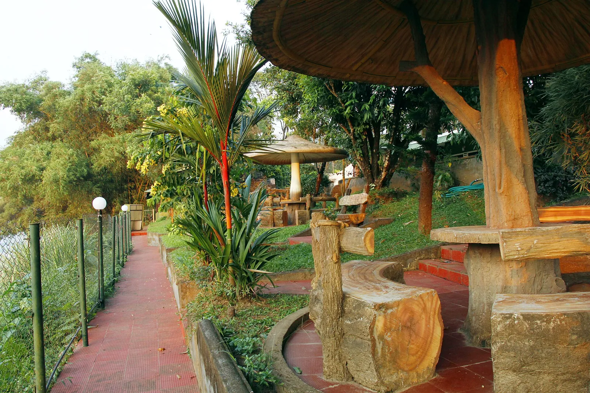
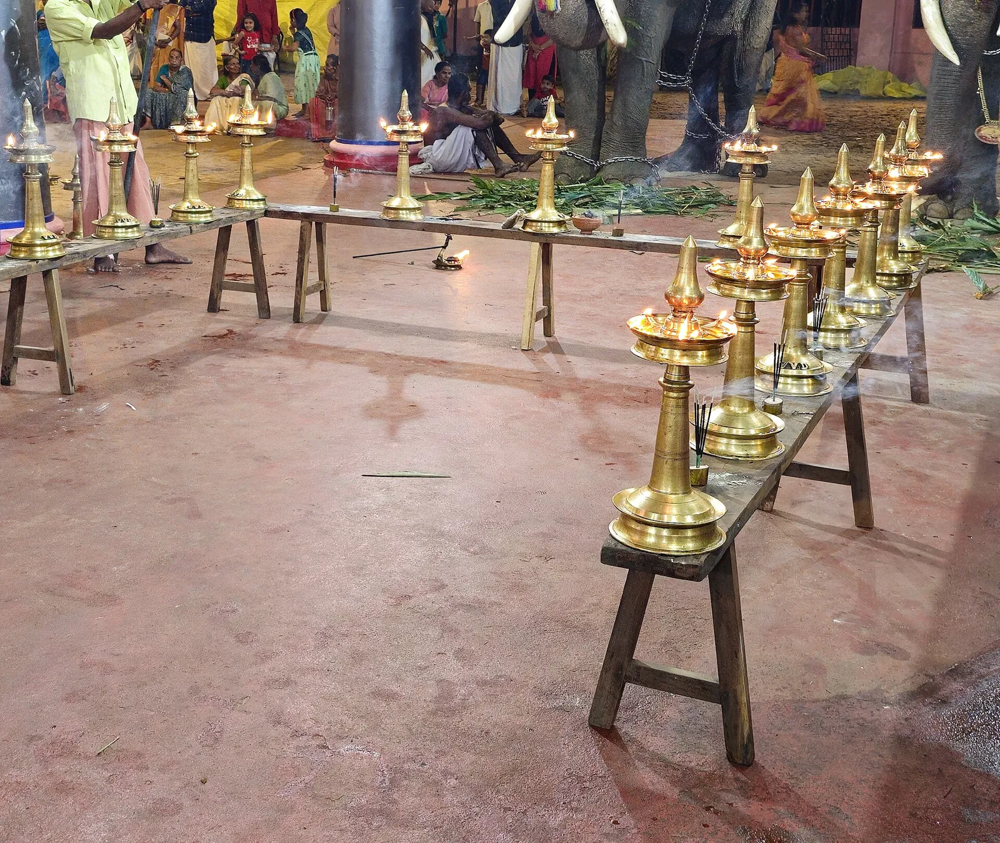

1 day
Abhyanga & Shirodhara
A warm full-body oil massage, then a steady stream of medicated oil over the forehead. A calm first taste of Kerala Ayurveda.
Ask about this programmeDhanwanthari Ayurveda Hospital · Chalappuram, Kozhikode
Panchakarma and rejuvenation at Dhanwanthari Ayurveda Hospital, Kozhikode. Stay with us, rest, and give the treatment the time it needs.
See programmes
Our inpatient hospital
Our hospital in Chalappuram admits patients for full courses of treatment, so you can stay, rest and be cared for under one roof.
In 1933, after seven years of gurukula study, Vaidyan C.N. Namboothiri founded Dhanwanthari Vaidyasala. Ninety-three years later, our medicines are still made in our own GMP-certified factory, and our inpatient hospital in Chalappuram gives you a room, a physician, and the time a full course of treatment needs.
Programmes
Every stay begins with a consultation. Your physician chooses the therapies and how long you stay.
1 day
A warm full-body oil massage, then a steady stream of medicated oil over the forehead. A calm first taste of Kerala Ayurveda.
Ask about this programme
7 days
A week of oil therapies, herbal steam and kizhi, planned by your physician to ease stiffness and clear the system.
Ask about this programme
14 days
Two weeks of Rasayana care: Navarakizhi, Shirodhara and rest, with a diet and daily routine to take home.
Ask about this programme
As prescribed
The classical cleanse, done in stages under daily supervision. Your physician decides which procedures you need, and for how long.
Ask about this programmeThe materials of healing
Ayurveda here is made by hand, from the herbs on the table to the oil in the dhara vessel.





Patient reviews
Patients review Dhanwanthari Ayurveda Hospital on Google Maps. Read what they say before you book, or share your own experience after your stay.
Rating and reviews from Google.
Travelling from the Gulf?
Send us your dates and your medical reports before you fly, and we'll suggest a programme and how long to stay.